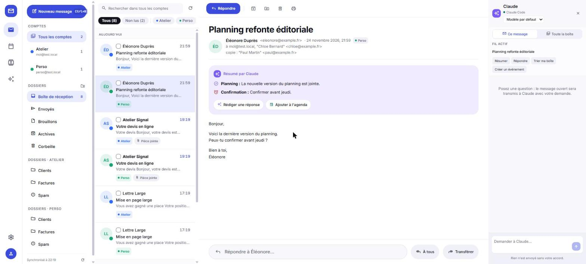
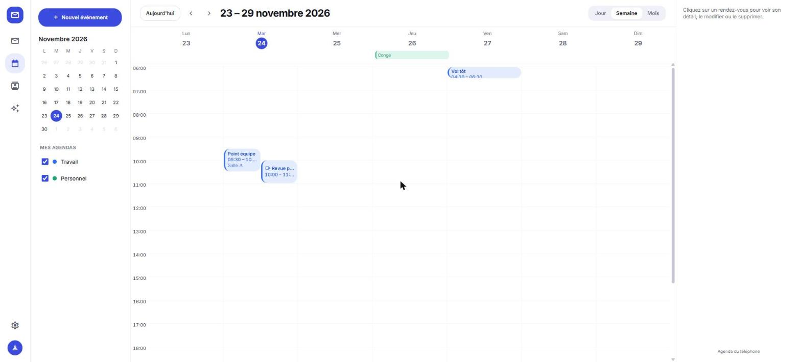
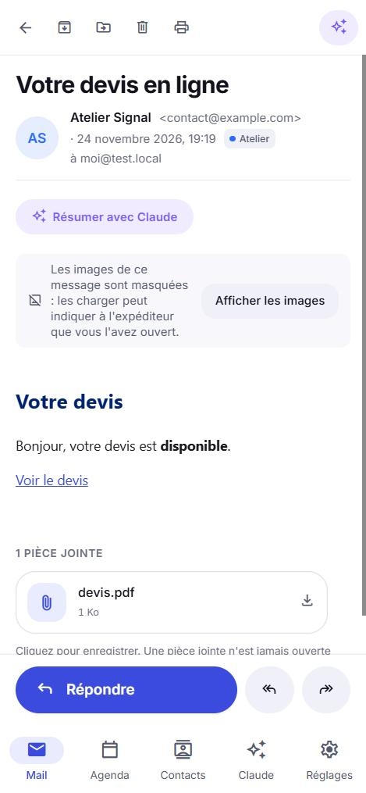
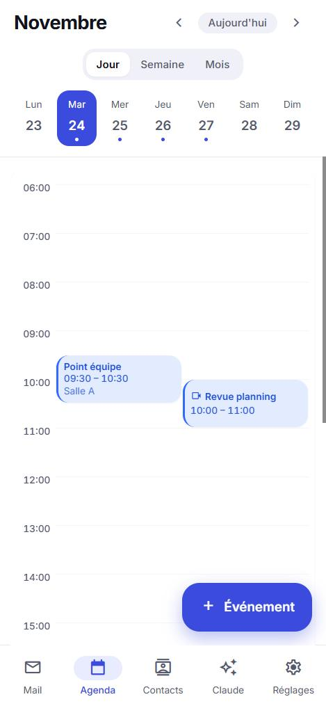

Courrier en images
Toutes vos boîtes, un seul endroit calme. Mail, agenda et contacts réunis pour Windows et Android, avec un assistant Claude qui lit avec vous : il propose, vous décidez.

Claude, votre assistant
Résumer un message, proposer une réponse, trier la boîte : Claude aide, mais rien n’est envoyé sans votre accord. En mode « Toute la boîte », il cite les messages par leur numéro, et un clic ouvre le message.


Gagner du temps
Clic droit sur un ou plusieurs messages, réponse rapide sous le message, fenêtre de rédaction qui laisse le message visible derrière.

Un agenda qui se pilote à la souris et au doigt
Un clic ou un glissé pour choisir la plage, des invités, un lien de visio. Sur PC, l’agenda est celui de Google Agenda ; sur Android, celui du téléphone.



Vos contacts, sans les modifier
Fiche du contact, derniers échanges, bouton « Écrire ». Sur PC, les contacts Google sont en lecture seule : Courrier ne les modifie jamais.

Vous choisissez ce qui se synchronise
Contacts et agendas affichés, copie locale, images distantes bloquées par défaut : les réglages de confidentialité sont à portée de main. Aucun serveur Courrier ne se place entre votre appareil et votre fournisseur de messagerie.

Sur téléphone comme sur ordinateur
Les mêmes écrans et le même design sur Android : liste des messages, dossiers, lecture avec pièces jointes, agenda du jour.





Ce qu’il faut savoir
- Courrier est une application personnelle, pour Windows et Android. Elle n’est pas publiée dans les magasins d’applications.
- Sur PC, la connexion à Google Agenda et aux contacts Google n’est pas encore validée par Google : un avertissement « application non vérifiée » s’affiche à la connexion.
- Le lien de réunion Teams ne se crée pas automatiquement ; Google Meet, oui, sur PC avec Google Agenda.
- Claude nécessite une clé API ou Claude Code ; la consommation est comptée dans l’application.
Politique de confidentialitéConditions d’utilisationPrésentation